Írország - saját szervezésű programok
Guiness
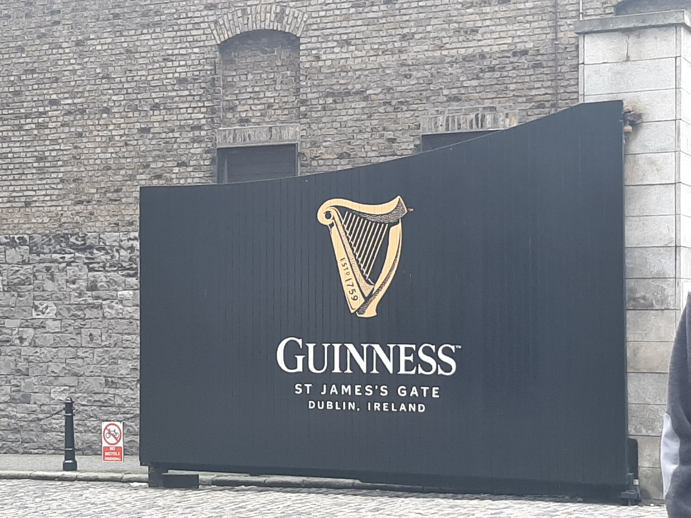Ezen a napon egy újabb izgalmas program várt ránk – a legendás Guiness sörfözde megtekintése. Már a nyitásra odaértünk. Belépéskor rögtön elkülönítettek minket, mert látták, hogy egy nagyobb társaság vagyunk. Első dolguk volt elkérni tőlünk a személyi igazolványainkat. Nagyon komolyan vették a korhatárt. Ennek megfelelően különféle jegyeket kaptunk. A csapatból a tanárokon kívül még 3 ember kapott olyan belépőt (a többiek nagy sajnálatára), amivel jogosultságot szerzett a látogatás végeztével 1 korsó általa választott sörhöz.
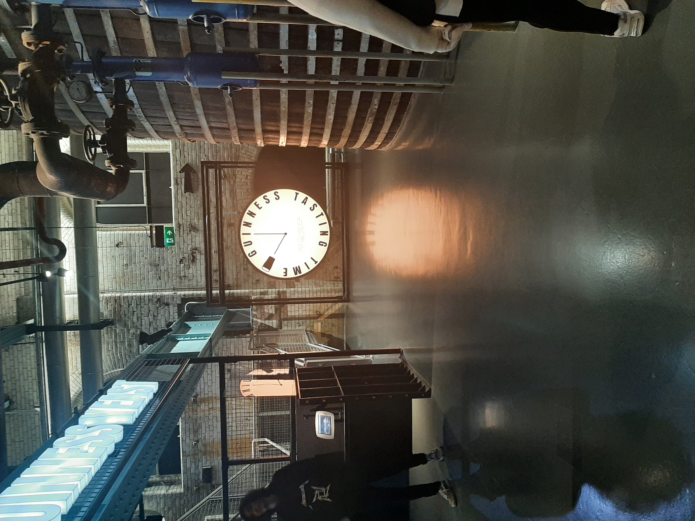Amint beértünk az épületbe, megbeszéltük, hogy mindenki megy a saját tempójában és azzal, akivel szeretne. Az építmény belülről fantasztikus volt. Az egész bemutatósorozat 5 emeleten helyezkedett el, illetve az egész úgy volt kialakítva, hogy bár úgy érezted, arra mész amerre akarsz, valójában végig vezetve voltál.
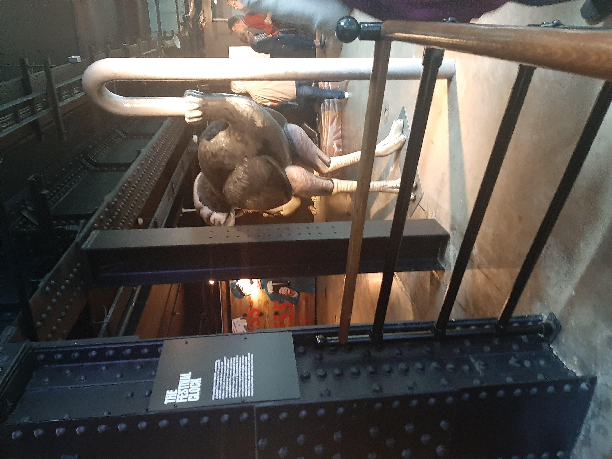A sör készítési folyamatának és múltjának megismerése közben szert tettünk egy kóstolóra, ami be volt építve a veztésbe. Beinvitáltak egy szobába, ahol először gőzpárákon keresztül ízlelhettük meg a különféle ízletes söröket, majd kaptunk egy kis kóstolót, amiről elmondták, hogy mikor hogyan szagoljuk, hogy a különböző ízeket és aromákat is megérezzük belőle. Aztán befejezésként felmásztunk egy nagyon nagy és meredek lépcsőn, aminek a végén felértünk a Guinness kupolába, ahonnan az egész környéket be lehet látni. Csodálatos volt a kilátás és szerencsére tiszta és szép idő volt aznap. Ott mindenki aki jogosult volt rá választhatott egy fajta korsó sört, amit jóízűen elfogyaszthatott a kupolában, a tájban gyönyörködve.
Howth
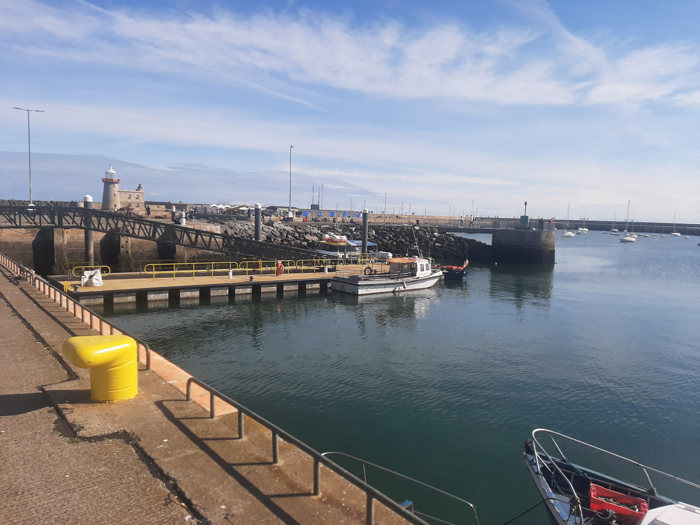 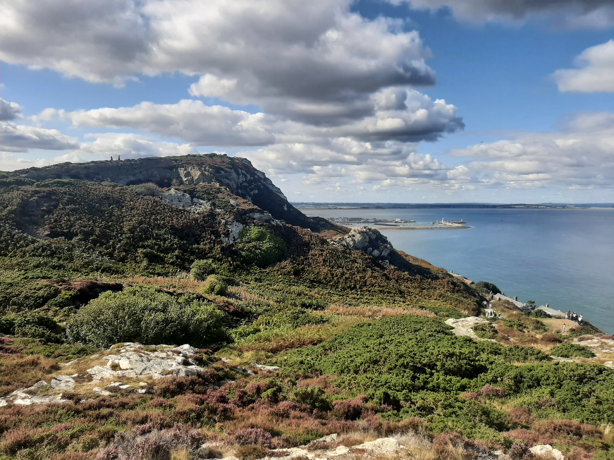Vasárnap reggel a szintén Dublinban tartózkodó olasz diákokkal ismerkedtünk egy közös program keretében. Vonattal, majd busszal utaztunk Howthba, ami egy kis kikötőváros. A hangulatos városkában nagyon ízes tengeri finomságokat lehetett kapni, és az itteni kis bazárban mindenféle szuveníreket vehettünk. Egy alapos városnézés után az olasz diákokkal közösen felmásztunk a közeli partmenti hegyekre is. Innen gyönyörű kilátás nyílt a tengerre. Délután visszaindultunk, elköszöntünk az olasz diákoktól, és hazamentünk. Tartalmas, jó nap volt.
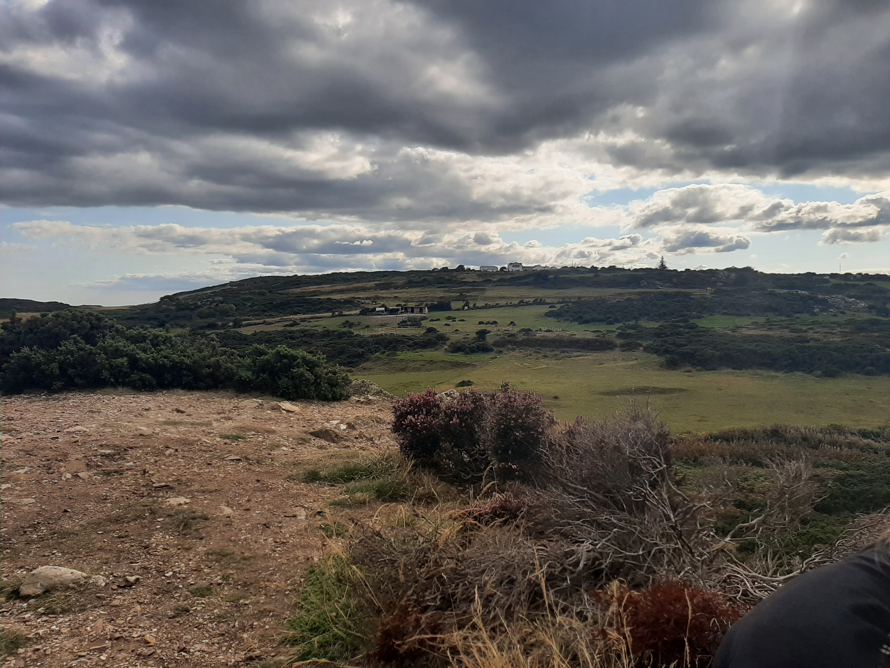 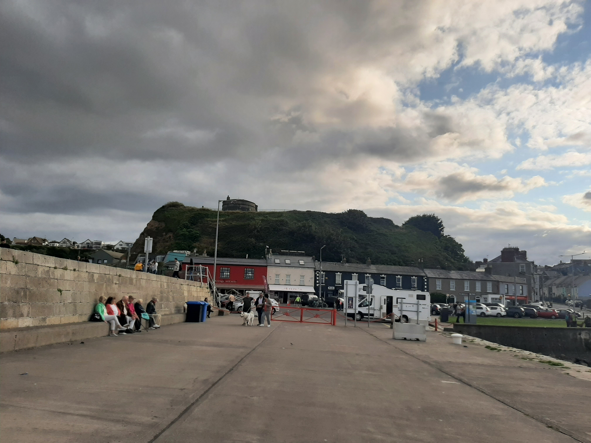Trinity College
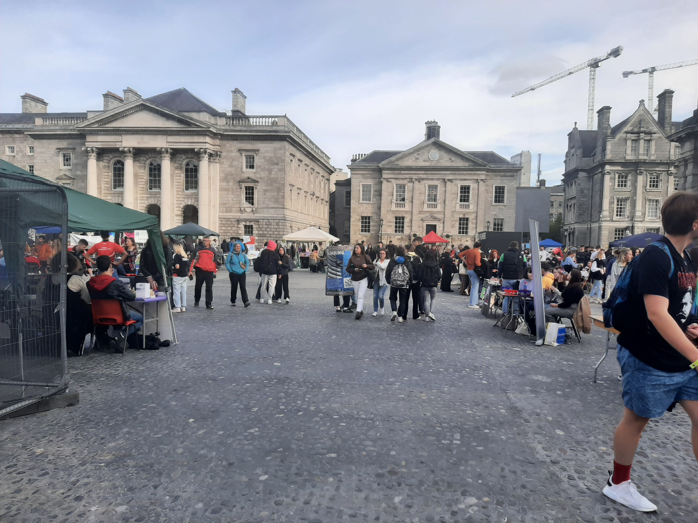 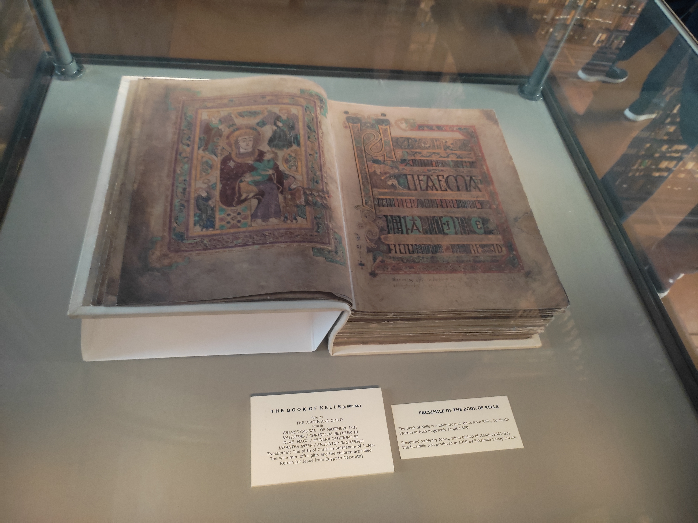A Trinity College egy igazán különleges hely. Éppen akkor látogattunk oda, amikor az odajáró diákok számára bemutatták, hogy milyen szakkörök közül választhatnak. A rengeteg sátor között járva mi is betekintést nyerhettünk az iskola által nyújtott sokszínű kínálatba. Ezután az iskola méltán híres könyvtárába látogattunk. A könyvtárba belépve azonnal megéreztük azt a különleges, jellemző illatot, ami a sokezer nagyon régi könyvből áradt. Ez az illat olyan különleges és kellemes volt, hogy miután már hozzászoktunk többen komolyan fontolóra vettük, hogy kimegyünk a könyvtárból, csak hogy újra bemehessünk és ismét megérezzük ezt a semmivel össze nem hasonlítható illatot.
 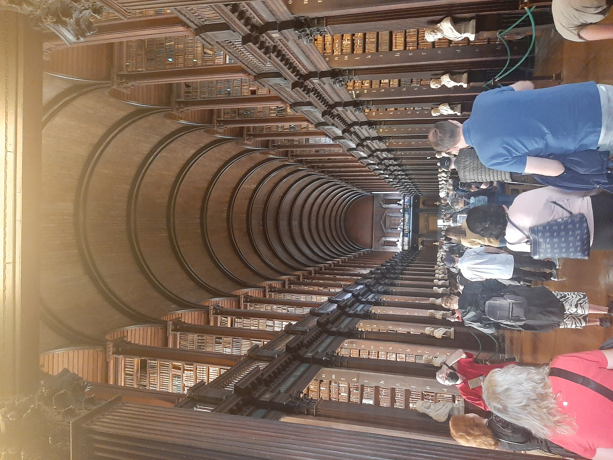
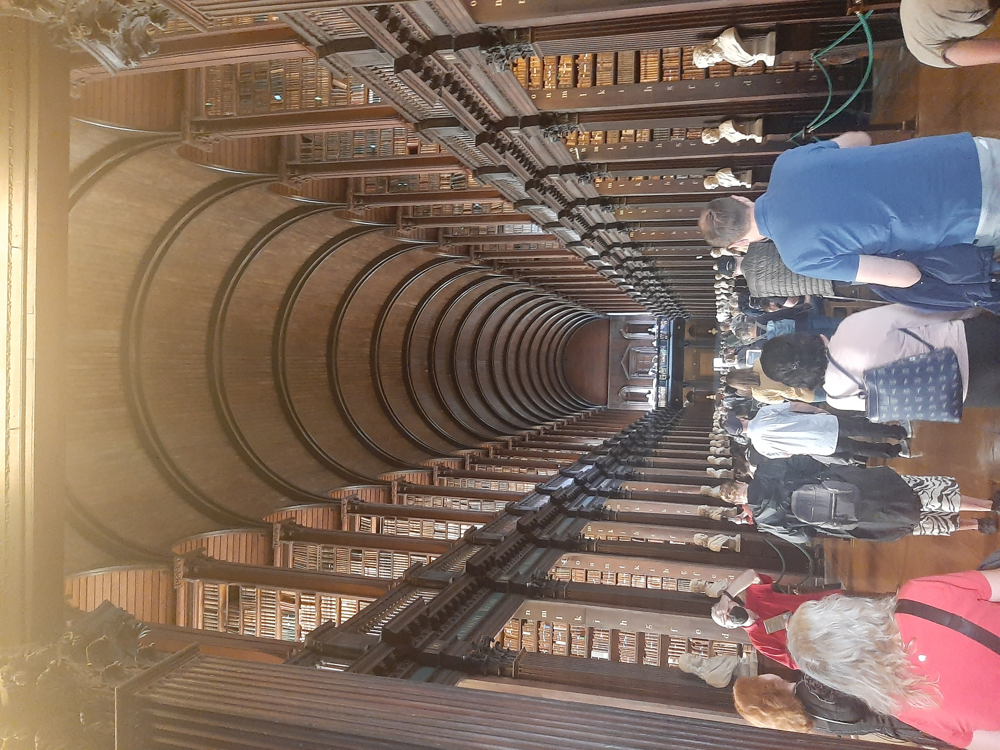
Glendalough


Az első hét szombat reggelén indultunk a szokásos helyről, az állomásról, ahonnan busszal utaztunk Glendalough-ba. Az út körülbelül 1 óra volt, de az idegenvezető ír akcentusa miatt sokkal többnek tűnt. Amikor megérkeztünk, csak két óránk volt felfedezni ezt a különleges helyet, utána vissza kellett mennünk a buszhoz. Glendalough egy elképesztően gyönyörű növényvilággal megáldott hely. Régen a viking korszakban épült a kis falucska, de meglepően jó állapotban maradt fent. Miután meglátogattuk a falut, továbbmentünk, és egy gyönyörű tónál kötöttünk ki, ami hegyekkel volt körülvéve. Itt kacsáztunk a kövekkel, fényképeztünk, ücsörögtünk a padokon és csodáltuk a tájat. Időben visszaértünk a buszhoz, és indultunk is haza.
National Museum of Ireland, EPIC
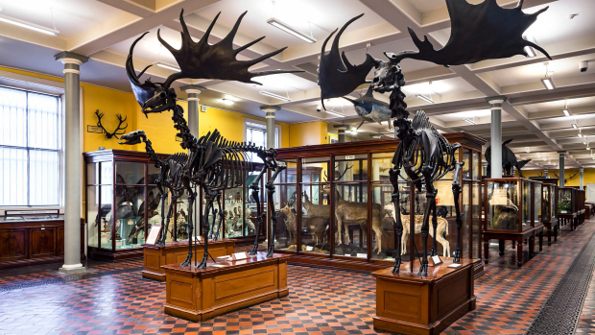Egy napot múzeumlátogatással töltöttünk. Mivel a csapat tagjainak érdeklődése megoszlott, így kettéváltunk . A társaság egyik fele az EPIC múzeumot, a másik fele az ingyenesen látogatható National Museum-ot tekintette meg. A természettudományok iránt érdeklődőket a múzeumba belépve két hatalmas jávorszarvas csontváz fogadta. Beljebb haladva a vitrinekben különféle rágcsálókat és halakat láttunk . A múzeumban minden Írországban őshonos állat megtalálható volt, vagy kitömött formában, vagy csontvázként. Mindegyik állathoz tartozott egy részletes leírás, ha esetleg már kihaltak, akkor a kihalásuk okát is megismerhettük. Sajnos csak az első szintet tudtuk megnézni, mivel a második szintet éppen akkor építették át. A múzeumlátogatás után szabadfoglalkozás volt, mindenki a számára érdekes látnivalókat tekinthette meg.

Az EPIC múzeum meglátogatása sajnos nem ingyenes volt, de megérte. A múzeum egy pláza alatt helyezkedik el. Gyönyörű volt és hangulatos, egyik szobából a másikba átlépve egy egészen új stílusba és témába csöppentünk. Rengeteg interaktív lehetőség volt, de sajnos nem tudtunk mindent megnézni. Kaptunk egy elektronikus idegenvezetőt, amely a szobákra bontva beszélt nekünk az azzal kapcsolatos témákról, emellett rengeteg szöveget olvashattunk és képekkel és animációkkal volt tele a fal. A múzeum maga az írek más országokba való kivándorlásának történetét mutatja be.